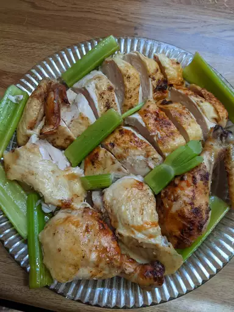

How to make a Juicy Roasted Chicken

Description
This Juicy Roasted Chicken recipe was given to me by a dear friend many years ago, and I've been making it ever since! It's great for barbecues.
Ingredients
- 1 (3 pound) whole chicken, giblets removed
- salt and black pepper to taste
- 1 tablespoon onion powder, or to taste
- ½ cup margarine, divided
- 1 stalk celery, leaves removed
Steps
- Preheat oven to 350 degrees F (175 degrees C).
- Place chicken in a roasting pan, and season generously inside and out with salt and pepper. Sprinkle inside and out with onion powder. Place 3 tablespoons margarine in the chicken cavity. Arrange dollops of the remaining margarine around the chicken's exterior. Cut the celery into 3 or 4 pieces, and place in the chicken cavity.
- Bake chicken uncovered in the preheated oven until no longer pink at the bone and the juices run clear, about 1 hour and 15 minutes.
- An instant-read thermometer inserted into the thickest part of the thigh, near the bone, should read 180 degrees F (82 degrees C).
- Remove from heat and baste with melted margarine and drippings. Cover with aluminum foil and allow to rest about 30 minutes before serving.
Try out other recipes!